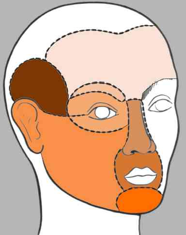
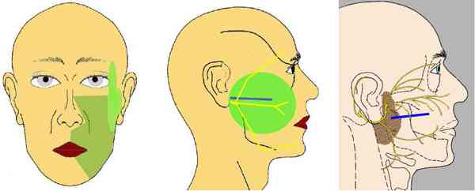
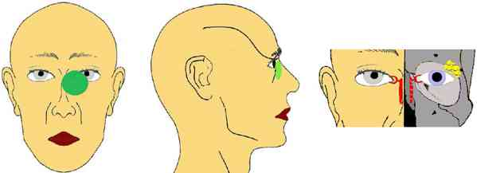
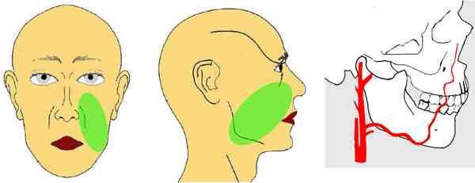
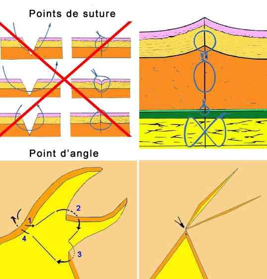
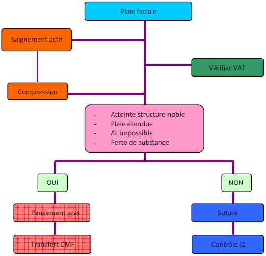

Bienvenue Sur Medical Education
Plaies de la face et du crâne
Spécialité : symptomes / traumatologie /
Points importants
-
Fréquence importante (AL >> AG)
-
Parfois associées : fractures, lésions OPH sur plaie palpébrale...
-
Domaine de l'urgence chirurgicale générale mais quelques spécificités :
-
perte de substance
-
atteinte orificielle (oeil, nez, bouche, oreille)
-
éléments nobles
-
atteinte muqueuse
-
Respecter :
-
unités esthétiques
-
techniques de suture
- perte de substance
- atteinte orificielle (oeil, nez, bouche, oreille)
- éléments nobles
- atteinte muqueuse
- unités esthétiques
- techniques de suture
 _293 Unités esthétiques
Présentation clinique / CIMU
SIGNES FONCTIONNELS
Généraux
- Saignement parfois actif
- Toujours décrit comme abondant par le patient (et minimisé par le médecin...)
- Se méfier d'une importante plaie du scalp chez les personnes âgées : saignement tari souvent mais spoliation sanguine parfois importante
Spécifiques
- En cas d'atteinte d'un élément noble (Cf. Infra)
CONTEXTE
Circonstances de survenue
-
Arme blanche ou verre :
- plaies franches, rectilignes, berges nettes
-
AVP, objet contondant :
- plaies contuses, +/- étoilées
- brûlures (1er ou 2e degré) par frottement
- recherche fracture sous-jacente
- corps étrangers dans la(les) plaie(s)
Morsures, armes à feu
- Lacération, attachement
- Délabrement
- Pertes de substance
EXAMEN CLINIQUE
Recherche d'atteinte d'un élément noble
-
Nerf facial : paralysie faciale :
- occlusion palpébrale, mimique, grimace, gonflement des joues
-
Plaie du canal de Sténon :
- salive dans la plaie : aspect filant
 _294 Canal de Sténon et nerf facial
-
Plaie des voies lacrymales :
- topographie lésionnelle (paracanthale interne)
 _295 Voies lacrymales
-
Plaie de l'artère faciale :
- saignement pulsatile
 _296 Artère faciale
- Lésions osseuses associées si choc initial
- Fractures alvéolo-dentaires sur plaie labiale supérieure
- Vérifier statut vaccinal
EXAMENS PARACLINIQUES SIMPLES
- Hémoglobine capillaire
CIMU
- Tri 3
Signes paracliniques
-
NFS si doute sur saignement tari et importante
Traitement
TRAITEMENT PREHOSPITALIER/INTRAHOSPITALIER
Traitement
TRAITEMENT PREHOSPITALIER/INTRAHOSPITALIER
Stabilisation initiale
- Vérifier VAT
-
Nettoyage :
- NaCl 0,9% + antiseptique (éviter les produits colorés : baisse de la visibilité, risque de tatouage)
- compresses non tissées humides
- saignement => compression (bidigitale, endobuccale si besoin)
- tout saignement facial cède à la compression prolongée
- hémostase : sélective +++ au fil (pas de bistouri électrique : nerf facial)
-
Anesthésie (Durée d'action > 20 min, augmente avec un vasoconstricteur) :
- après recherche d'une PF (risque de bloc moteur sur le VII)
- dessin avant infiltration si besoin
- matériel : seringue 10 ml (diminue la pression d'injection) + aiguille à SC
-
injection :
- dans la plaie (évite douleur au passage cutané)
- injection lente, plan par plan si besoin
- faire légèrement gonfler les berges
-
Exploration de la plaie sous AL :
- éliminer tous les corps étrangers (verre, bois, bitume...) : jeu de patience...
- déplier soigneusement tous les lambeaux : perte de substance vraie rare
- pas de parage ou 1 mm maximum
-
Suture :
- plaie cutanée simple < 6 h => pas d'antibiotique
-
suture plan par plan :
- de la profondeur vers la superficie
- points séparés uniquement : éversants, rapprochés (maxi 5 mm), fins : 1 mm des berges
-
fils à utiliser :
- muscle : résorbables, points rapprochants simples : (Vicryl® 3/0)
- sous-peau : affrontement des berges cutanées : (Vicryl® 4/0 ou 3/0)
- peau : points posés, non serrés, monofilament non résorbable : (Ethilon® 5/0)
- muqueuse : fermeture "hermétique" : (Vicryl® rapide 3/0)
-
NB :
- suture première des points d'angle (repère)
- points en U sur lambeaux fins
- si décollement important : drainage par crins de Florence (ablation des crins à J1)
- pansement compressif
-
Cas particulier des morsures :
- peu de points profonds
- points cutanés + espacés si possible
- drainage (crins de Florence) systématiques 24/48 h
- ablation des fils à J7
- surveillance rapprochée
 _297 Points de suture
Suivi du traitement
-
Ablation des fils :
- face : J5
- cuir chevelu : J15
-
Cicatrice à l'air dès que possible (macération) :
- vaseline sur les croûtes
- Protection solaire 12 mois
- Massage de la cicatrice à 6 semaines
MEDICAMENTS
- Antalgiques : Efferalgan® 1 g x 4/j
-
Antibiotiques si plaie > 6 h :
- Augmentin® 1 g x 3/j 7 jours (Pyostacine® 1 g x 2/j si allergie)
- si morsure animale : ajouter vibramycine 200 mg/j 10 jours
Devenir / orientation
CRITERES D'ADMISSION
-
Toute plaie faciale doit être suturée
-
Transfert en Chirurgie Maxillo-faciale si :
-
plaie étendue à plusieurs unités esthétiques
-
atteinte de structure noble
-
anesthésie locale impossible
-
perte de substance
CRITERES DE SORTIE
-
Plaie suturée
ORDONNANCE DE SORTIE
-
Efferalgan® 1 g x 4/j
-
Antibiotiques si plaie > 6 h :
-
Augmentin® 1 g x 3/j 7 jours (Pyostacine® 1 g x 2/j si allergie)
-
Contrôle à J1
RECOMMANDATIONS DE SORTIE
-
Ablation des fils :
-
face : J5
-
cuir chevelu : J15
-
Cicatrice à l'air dès que possible (macération) :
-
vaseline sur les croûtes
-
Protection solaire 12 mois
-
Massage de la cicatrice à 6 semaines
Algorithme
-
Algotithme : plaies de la face
- plaie étendue à plusieurs unités esthétiques
- atteinte de structure noble
- anesthésie locale impossible
- perte de substance
- Augmentin® 1 g x 3/j 7 jours (Pyostacine® 1 g x 2/j si allergie)
- face : J5
- cuir chevelu : J15
- vaseline sur les croûtes
Algorithme
- Algotithme : plaies de la face
 _662 Algorithme Algorithme : plaies de la face
Bibliographie
-
Teysseres N., Fossat S. Incisions et sutures en chirurgie maxillofaciale et stomatologie. EMC (Elsevier Masson SAS, Paris), Stomatologie, 22-325-A-10, 2008
Auteur(s) : Arnaud RIGOLET